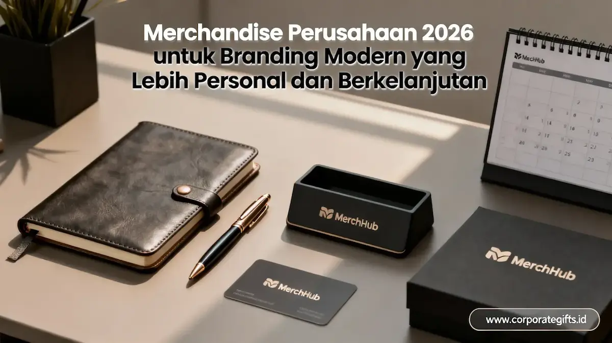

Corporate Gifts ID - Merchandise perusahaan 2026 untuk branding personal adalah produk berlogo dan bermutu premium, seperti tumbler stainless, agenda kerja kulit, dan apparel custom, yang dipakai karyawan, eksekutif, atau mitra bisnis untuk membangun citra profesional sekaligus memperkuat identitas brand perusahaan. Tiga pilar standar yang membedakannya adalah penerapan material ramah lingkungan (sustainability), fungsionalitas harian yang tinggi, dan standar mutu kelas atas.
Poin Kunci Merchandise Perusahaan 2026:
- Tiga Standar Wajib: Keberhasilan cinderamata korporat modern diukur dari keberlanjutan (sustainability), fungsionalitas harian, dan kualitas material premium.
- Representasi Nyata ESG: Material daur ulang, stainless steel SUS 304, bambu alami, dan plastik PCR merefleksikan komitmen tata kelola lingkungan perusahaan.
- Brand Exposure Berulang: Produk yang digunakan setiap hari seperti tumbler insulasi dan agenda kerja menciptakan eksposur merek berkelanjutan tanpa terkesan memaksakan.
- Cerminan Kredibilitas Institusi: Kualitas produk yang kokoh dan rapi membentuk persepsi prestisius di mata investor, mitra strategis, dan klien prioritas.
- Kustomisasi Visual Konsisten: Penempatan logo proporsional dan keselarasan warna korporat memperkuat pengenalan identitas merek.
- Sinergi Personal & Corporate Branding: Cinderamata yang dikenakan staf dan pimpinan membentuk impresi kredibel bagi individu sekaligus korporasi.
Merchandise korporat tidak lagi dipandang sebagai sekadar pengeluaran seremonial atau souvenir pelengkap rapat. Di era persaingan bisnis yang ketat, merchandise telah berevolusi menjadi instrumen komunikasi reputasi yang menghubungkan profesionalitas individu dengan martabat perusahaan yang diwakilinya.
Mengapa Merchandise Perusahaan Menjadi Prioritas Strategis di 2026?
Merchandise perusahaan bertransformasi menjadi prioritas strategis karena fungsinya telah meluas dari sekadar alat promosi satu arah menjadi jembatan hubungan relasi bisnis jangka panjang. Kebutuhan ini semakin terakselerasi seiring menguatnya penerapan prinsip tata kelola Environmental, Social, and Governance (ESG) dalam seleksi pengadaan korporat.
Divisi General Affairs (GA) dan Human Capital kini memposisikan merchandise perusahaan sebagai garda depan komunikasi nilai internal dan eksternal. Perilaku mitra bisnis saat ini jauh lebih kritis terhadap orisinalitas bahan, ergonomi penggunaan, dan keanggunan estetika visual.
Apa Tiga Standar Utama Merchandise Perusahaan 2026?
Tiga standar utama yang menjadi tolok ukur kurasi cinderamata korporat modern meliputi keberlanjutan (sustainability), fungsionalitas harian, dan kualitas material premium. Ketiga elemen ini saling mengunci untuk menciptakan cinderamata berdaya guna tinggi.
Bagaimana Sustainability Menjadi Standar Baru?
Keberlanjutan menjadi standar mutlak karena pemangku kepentingan kini menilai reputasi dari jejak ekologis produk yang dibagikan. Membagikan souvenir plastik tipis sekali pakai kini berisiko merusak citra lingkungan perusahaan.
Pemanfaatan material baja tahan karat (stainless steel), serat bambu terbarukan, kanvas daur ulang, serta plastik PCR (Post-Consumer Recycled) membuktikan kepedulian institusi terhadap masa depan bumi. Selain itu, produk ramah lingkungan memiliki durabilitas jauh lebih baik sehingga umur simpan cinderamata menjadi berlipat ganda.
Mengapa Fungsionalitas Menentukan Efektivitas?
Tingkat utilitas produk berbanding lurus dengan efektivitas anggaran promosi (Return on Investment). Cinderamata yang hanya berakhir di dasar laci meja kerja menghasilkan nol eksposur bagi perusahaan.
Sebaliknya, produk fungsional seperti botol minum insulasi yang dibawa ke ruang pertemuan atau agenda berdesain ergonomis yang menyertai aktivitas luar kantor akan menciptakan interaksi merek secara pasif namun terus berulang di tengah komunitas profesional.
Mengapa Kualitas Premium Menjadi Cerminan Reputasi?
Mutu fisik produk adalah cermin kejujuran standar kualitas manajemen perusahaan. Barang promosi dengan sablon mudah mengelupas atau ritsleting macet akan diasosiasikan langsung dengan kualitas layanan bisnis yang rendah.
Pemberian paket souvenir custom VIP dengan sentuhan presisi grafir laser dan kemasan hardbox kokoh mengirimkan sinyal rasa hormat yang mendalam kepada klien strategis maupun dewan pimpinan.
Bagaimana Merchandise Perusahaan Mendukung Branding Personal?
Setiap karyawan, manajer proyek, dan direksi pada hakikatnya merupakan duta merek (brand ambassador) bagi perusahaannya. Saat mereka mengenakan seragam polo bordir rapi, membawa buku catatan kulit berlogo embos halus, atau menggunakan payung golf berinsulasi saat menjemput klien, mereka memancarkan aura kompetensi yang solid.
Penerapan merchandise untuk penguatan personal branding mencakup berbagai tingkatan:
- Jajaran Eksekutif & Pimpinan: Agenda kulit hardcover, pena rol metal berbobot mantap, dan cardholder mewah yang menegaskan kredibilitas pada rapat koordinasi tingkat tinggi.
- Tim Penjualan & Business Development: Tumbler vakum stainless steel dan powerbank nirkabel elegan yang siap menemani mobilitas pertemuan lapangan.
- Karyawan Baru: Paket welcome kit onboarding komprehensif yang langsung menumbuhkan rasa bangga dan kepemilikan sejak hari pertama bergabung.
- Narasumber & Pembicara Publik: Apparel custom dengan potongan modern yang mempertegas identitas korporat di atas panggung seminar dan expo industri.

Kombinasi merchandise kantor berdaya guna tinggi siap kustomisasi logo presisi untuk menunjang citra profesional.
Kategori Merchandise Perusahaan yang Paling Relevan di 2026
Berdasarkan tren kebutuhan korporat terkini, terdapat enam lini kategori produk yang paling efektif dalam mengintegrasikan branding institusi dan personal:
1. Tumbler Custom Stainless Steel
Termos vakum berdinding ganda (double-wall) food grade SUS 304 memadukan fungsi menjaga suhu minuman hingga 12 jam dengan pesan gaya hidup sehat tanpa botol plastik sekali pakai. Kustomisasi melalui grafir laser presisi menghasilkan logo monokrom yang tahan abrasi seumur pakai.
2. Agenda dan Kalender Korporat
Buku catatan bersampul kulit sintetis (leatherette) atau kanvas goni daur ulang menawarkan ruang branding subtil di meja kerja pimpinan sepanjang 365 hari, dilengkapi fitur kalender perencana dan selipan kartu nama.
3. Apparel Custom (Polo Shirt, Jaket, & Topi)
Pakaian korporat berbahan katun pique atau dryfit premium dengan bordir komputer presisi berfungsi sebagai media promosi bergerak yang merefleksikan kerapian kerja tim di setiap agenda pameran dan gathering.
4. Tas Belanja Guna Ulang (Reusable Tote Bag)
Tas jinjing kanvas katun organik, denim tebal, atau rPET daur ulang menyediakan bidang permukaan branding yang luas, sangat digemari untuk paket seminar nasional, lokakarya, dan program bakti sosial CSR.
5. Teknologi Ramah Lingkungan (Powerbank & Charger Portabel)
Perangkat pengisi daya nirkabel dengan aksen casing serat bambu alami atau plastik daur ulang menjawab kebutuhan daya gawai pekerja lapangan yang dinamis sekaligus mencerminkan orientasi teknologi modern.
6. Flashdisk Custom Eksklusif
Media penyimpanan USB berbalut bahan kayu kenari, kartu nama plastik tipis, atau logam putar (swivel) tetap menjadi instrumen paling andal dalam membagikan dokumen profil perusahaan, portofolio proyek, dan materi presentasi penting secara luring.
Bagaimana Cara Memilih Kategori Merchandise yang Tepat?
Kunci keberhasilan alokasi anggaran cenderamata korporat terletak pada segmentasi audiens yang presisi. Pendekatan cinderamata harus dibedakan secara tegas antara audiens internal, mitra komersial, dan publik umum.
Tabel Kesesuaian Kategori Produk dengan Tujuan Branding
Berikut matriks panduan kurasi produk berdasarkan segmen sasaran dan kontribusi nilai merek:
| Kategori Produk | Kesesuaian Target Penerima | Nilai Tambah & Dampak Branding |
|---|---|---|
| Tumbler Custom Stainless | Onboarding staf baru, souvenir rapat kerja, hadiah gathering | Eksposur harian di meja kantor, simbol komitmen keberlanjutan |
| Agenda & Kalender Korporat | Klien prioritas, pejabat mitra bisnis, jajaran eksekutif | Retensi brand sepanjang tahun, penunjang produktivitas rapat |
| Apparel Custom Eksekutif | Staf pameran dagang, panitia event, delegasi konferensi | Media berjalan dengan identitas visual seragam dan profesional |
| Tas Belanja Guna Ulang | Peserta seminar umum, stakeholder program CSR, komunitas | Bidang logo luas, praktis digunakan berulang di ruang publik |
| Gadget Teknologi Hijau | Pekerja mobile, teknisi lapangan, tamu VVIP korporat | Persepsi inovasi terdepan, daya saing digital berwawasan lingkungan |
| Flashdisk Custom USB | Kemitraan B2B, penyerahan proposal tender, media kit pers | Distribusi data aman berwujud fisik yang tersimpan rapi |
Kesimpulan
Merchandise perusahaan di tahun 2026 bukan lagi sekadar suvenir tempelan, melainkan bagian integral dari strategi komunikasi reputasi korporat. Melalui pemilihan produk yang menjunjung pilar sustainability, fungsionalitas harian tinggi, dan keunggulan kualitas material, perusahaan mampu memancarkan wibawa profesional yang konsisten sekaligus mendukung personal branding setiap individunya.
Jelajahi ragam portofolio cinderamata kantor modern kami melalui menu katalog resmi atau diskusikan kebutuhan kustomisasi instansi Anda bersama tim kurator berpengalaman.
FAQ Seputar Merchandise Perusahaan 2026

Ditulis oleh: Arinda Zakia
Senior Corporate Gifting SpecialistSpesialis kurasi merchandise korporat modern, gift set VIP, audit kelayakan material B2B, dan strategi pengadaan cenderamata berkelanjutan di CorporateGifts.ID.
Lihat Profil Lengkap & Panduan Lainnya